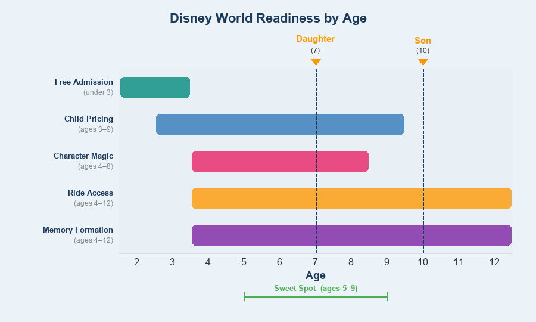

Ideal Age to Take Kids to Disney World
Comprehensive Analysis for a Family with a 7-Year-Old Daughter and 10-Year-Old Son
1. Height Requirements vs. Age
Complete Disney World Height Requirements by Tier
At 48 inches (4 feet), a child can ride every attraction at Walt Disney World. Below is every ride with a height requirement, organized by minimum height tier.
Theme Park Rides
| Height Req. | Ride | Park |
|---|---|---|
| 32" (81 cm) | Alien Swirling Saucers | Hollywood Studios |
| 32" | Tomorrowland Speedway (passenger only) | Magic Kingdom |
| 35" (89 cm) | The Barnstormer | Magic Kingdom |
| 38" (97 cm) | Seven Dwarfs Mine Train | Magic Kingdom |
| 38" | Slinky Dog Dash | Hollywood Studios |
| 38" | Millennium Falcon: Smugglers Run | Hollywood Studios |
| 38" | Kali River Rapids | Animal Kingdom |
| 40" (102 cm) | Big Thunder Mountain Railroad | Magic Kingdom |
| 40" | Tiana's Bayou Adventure | Magic Kingdom |
| 40" | Soarin' Around the World | Epcot |
| 40" | Test Track | Epcot |
| 40" | Mission: SPACE (Green/Less Intense) | Epcot |
| 40" | Star Tours: The Adventures Continue | Hollywood Studios |
| 40" | Star Wars: Rise of the Resistance | Hollywood Studios |
| 40" | Tower of Terror | Hollywood Studios |
| 42" (107 cm) | Guardians of the Galaxy: Cosmic Rewind | Epcot |
| 44" (113 cm) | Space Mountain | Magic Kingdom |
| 44" | Avatar Flight of Passage | Animal Kingdom |
| 44" | Expedition Everest | Animal Kingdom |
| 44" | Mission: SPACE (Orange/More Intense) | Epcot |
| 48" (122 cm) | TRON Lightcycle Run | Magic Kingdom |
| 48" | Rock 'n' Roller Coaster (Aerosmith) | Hollywood Studios |
Water Park Rides (48" requirement)
| Ride | Park |
|---|---|
| Downhill Double Dipper | Blizzard Beach |
| Slush Gusher | Blizzard Beach |
| Summit Plummet | Blizzard Beach |
| Crush 'n' Gusher | Typhoon Lagoon |
| Humunga Kowabunga | Typhoon Lagoon |
Note: The vast majority of Disney World attractions have NO height requirement. Only about 20 theme park rides enforce one.
Average Height by Age (CDC 50th Percentile)
Based on CDC growth chart data:
| Age | Girls (50th %ile) | Boys (50th %ile) | Rides Unlocked |
|---|---|---|---|
| 3 | ~37" | ~38" | Most no-requirement rides |
| 4 | ~40" | ~40" | 32" and 35" tier |
| 5 | ~43" | ~43" | 38" and 40" tiers |
| 6 | ~45" | ~46" | 42" and 44" tiers |
| 7 | ~48" | ~48" | ALL rides (48" tier) |
| 8 | ~50" | ~51" | All rides comfortably |
| 9 | ~52" | ~53" | All rides |
| 10 | ~54" | ~55" | All rides |
Key Takeaway
- By age 7, an average-height child can ride EVERYTHING at Disney World, including TRON Lightcycle Run and Rock 'n' Roller Coaster.
- By age 5-6, children can ride most major attractions (everything except TRON and Rock 'n' Roller Coaster).
- Your 7-year-old daughter is right at the threshold for all rides if she is average height. Measure her before booking -- if she is close to 48", she will be able to ride everything.
- Your 10-year-old son at ~55" can ride every single attraction without question, including driving the Tomorrowland Speedway (requires 54" to drive solo).
Sources: - Magic Guides: Height Requirements - Undercover Tourist: Disney World Height Requirements - MouseHacking: Height Requirements 2026 - CDC Growth Charts
2. Character Interaction Sweet Spot
When Do Kids Most Enjoy Meeting Characters?
| Age Range | Character Interaction Experience |
|---|---|
| Under 2 | Often frightened by costumed characters; cute photos for parents but minimal engagement |
| 2-3 | Mixed reactions -- some love it, some are terrified. Unpredictable. |
| 3-5 | The beginning of the "magic zone." Kids recognize characters from movies, believe they are real, and engage enthusiastically. Princesses and superheroes are huge hits. |
| 5-7 | PEAK MAGIC. Characters feel absolutely real. Kids prepare questions, give hugs, show costumes. This is when the jaw-dropping, tear-inducing reactions happen. |
| 7-9 | Still highly enjoyable. Kids may begin to question but still choose to believe. Excitement is high, especially for favorites. |
| 10-11 | Transitional. Many kids still enjoy it but may feel "too cool" in front of peers. One-on-one meetings still special. |
| 12+ | Most have outgrown the belief but can still enjoy it ironically or for nostalgia. Varies greatly by child. |
The Magic Window
The expert consensus across multiple Disney planning sites is that ages 4-8 represent the peak character interaction window. During this range:
- Children fully believe the characters are real
- They are old enough to communicate and interact meaningfully
- They remember the experience vividly
- The emotional reactions are the most intense and genuine
Assessment for Your Family
- Your 7-year-old daughter is squarely in the peak zone for princess interactions. If she loves Disney princesses, meeting Cinderella, Elsa, Rapunzel, and others will be a highlight she talks about for years.
- Your 10-year-old son is at the transitional edge. He may still enjoy meeting Star Wars characters (Chewbacca, Kylo Ren) or Marvel characters, but traditional character greetings may feel "babyish." Galaxy's Edge immersive character encounters (where characters interact in-story, not in a meet-and-greet line) tend to resonate better with this age group.
Sources: - The Park Prodigy: Best Age for Disney World - She's Becoming Domestic: Complete Breakdown - Adventures of a Disney Dad: Best Age - MickeyVisit: Best Age for Disney World
3. Stamina and Endurance
Park Demands
A typical Disney World day involves: - 12,000-20,000 steps (approximately 5-10 miles of walking) - 8-14 hours of park time for a full day - Standing in lines, walking between attractions, navigating crowds - Florida heat and humidity (particularly brutal May-September)
Stamina by Age Group
| Age | Hours Before Fatigue | Stroller Needed? | Midday Break? | Full Park Day? |
|---|---|---|---|---|
| Under 3 | 2-4 hours | Absolutely | Mandatory nap | No |
| 3-4 | 3-5 hours | Yes | Strongly recommended | With stroller + break |
| 5-6 | 5-7 hours | Recommended for multi-day trips | Recommended | Possible with break |
| 7-8 | 6-9 hours | Not typically, but nice for multi-day | Optional | Yes, with pacing |
| 9-10 | 8-12 hours | No | Optional | Yes |
| 11+ | Full day | No | No | Yes |
Stroller Considerations
- Under 5: Stroller is essential.
- Ages 5-6: Stroller strongly recommended, especially for multi-day trips. A full Disney day is close to 10 miles -- most 6-year-olds will fade, especially in Florida heat.
- Ages 7-8: Common opinion is that age 8 is when you can confidently ditch the stroller. Many 7-year-olds benefit from one on multi-day trips.
- Age 8+: Stroller generally not needed. These kids can handle the walking with proper hydration and rest stops.
Meltdown Prevention
Key strategies that affect age-readiness: - Children under 6 benefit enormously from a midday pool/nap break at the hotel - Ages 7+ can generally power through a full day with snack breaks and shade stops - Multi-day trips are much less exhausting than trying to cram everything into 1-2 days
Assessment for Your Family
- Your 7-year-old daughter can handle a full park day but will benefit from pacing -- sit-down meals, shade breaks, maybe a midday return to the hotel on the hottest days. No stroller needed for a single visit, but consider one for a multi-day trip if she tires easily.
- Your 10-year-old son has adult-level stamina for theme parks. He will likely want to go from rope drop to fireworks. His main limitation will be boredom in long lines, not physical fatigue.
Sources: - Mouse Ear Memories: Stroller Age Guide - Mama Cheaps: Avoiding Cranky Kids - Walt Disney World Prep School: Disney World with Toddlers - Marvelous Mouse Travels: Strollers in Theme Parks
4. Pricing Thresholds
Disney World Age-Based Pricing Tiers
| Age | Ticket Category | Approx. 1-Day Ticket (2026) | Dining Plan Status |
|---|---|---|---|
| Under 3 | FREE | $0 | Free (no dining plan needed) |
| 3-9 | Child | $114-$194/day | Child pricing; FREE dining in 2026 promo |
| 10+ | Adult | $119-$209/day | Full adult pricing (~$95/day for Standard plan) |
The Age 10 Financial Cliff
Age 10 is the most expensive birthday in the Disney universe. The moment a child turns 10: - Tickets jump from child to adult pricing (saves $5-$15/day -- relatively small) - Dining Plans jump dramatically -- a 9-year-old eats free on the 2026 Kids Eat Free promo while a 10-year-old pays full adult price (~$95/day for Standard Dining Plan) - Character dining and buffets charge adult pricing at age 10
For a typical 5-day trip with dining plan, the cost difference between age 9 and age 10 can be $500+ for a single child.
Financial Sweet Spot
| Strategy | Savings Potential |
|---|---|
| Visit before youngest turns 3 | Free admission + free dining for that child |
| Visit while oldest is still 9 | Child ticket pricing + free 2026 dining promo |
| Visit ages 5-9 for all kids | Child pricing for everyone, can ride most things |
| Optimal financial window | All kids ages 3-9 |
Assessment for Your Family
- Your 7-year-old daughter (age 7) qualifies for child pricing and the 2026 Kids Eat Free promo. She is in the financial sweet spot.
- Your 10-year-old son (age 10) pays full adult prices for everything. If the trip can happen before his 10th birthday, you save meaningfully, especially with dining. If he is already 10, this ship has sailed.
- Net impact: Your daughter saves you money; your son costs adult prices. If there is ANY flexibility on timing and your son is close to turning 10, visiting before his birthday is worth hundreds of dollars.
Sources: - Walt Disney World Magazine: Ticket Prices 2026 - Magic Guides: Cost of Disney World - Walt Disney World Prep School: Disney World Costs - planDisney: Child Pricing FAQ
5. Memory Formation
The Science of Childhood Memory
| Concept | Details |
|---|---|
| Childhood amnesia | Most adults cannot recall events before age 3-4. Autobiographical memory begins around age 3.5 on average. |
| Reliable memory formation | Begins around age 5. Children aged 5+ encode memories with enough detail for long-term retention. |
| Memory maturity | Children's memory abilities do not fully mature until approximately age 7. After this point, memories are encoded similarly to adult memories. |
| Vacation-specific research | Studies show children as young as 3 can recall a Disney World vacation after 6-12 months, but older children retain significantly more detail. |
| Parental reinforcement | Parents who discuss experiences using an "elaborative conversational style" (asking detailed questions, adding context) significantly improve children's long-term memory of events. |
Memory Retention by Age
| Age at Visit | Memory Quality | Will They Remember at Age 20? |
|---|---|---|
| Under 3 | Will not form lasting memories | No -- the trip is for the parents |
| 3-4 | Fragmentary memories, may recall 1-2 moments | Unlikely without heavy photo/video reinforcement |
| 5-6 | Meaningful memories form, but details fade | Probably, especially highlights (meeting a character, a favorite ride) |
| 7-8 | Strong, detailed memories | Yes -- this is when experiential memories become robust |
| 9-10 | Adult-quality memory encoding | Yes -- will remember the trip vividly |
| 11+ | Full adult memory | Yes |
The Experiential Value Curve
The "sweet spot" for memory formation intersects with the "magic window" at approximately ages 6-9: old enough to form lasting memories, young enough for the experience to feel truly magical.
Assessment for Your Family
- Your 7-year-old daughter is at the perfect intersection of memory formation and magical belief. She will remember this trip in detail AND experience it with genuine wonder. This is arguably the single best year for memory-to-magic ratio.
- Your 10-year-old son will remember every detail clearly. While the "magic" may be fading, the experiential memories (thrill rides, Star Wars immersion, family bonding) will be vivid and lasting.
Sources: - Psychology Today: Why Can't We Remember Early Childhood - Psychology Today: Memorable Vacations Despite Preschooler Memory Limits - Wikipedia: Childhood Amnesia - PMC: Development of Episodic and Autobiographical Memory
6. Emotional and Developmental Readiness
Common Fear Triggers at Disney World
| Element | Potentially Scary For | Generally Fine For |
|---|---|---|
| Complete darkness (Space Mountain, Rock 'n' Roller Coaster) | Under 7 | 8+ |
| Loud noises/explosions (fireworks, cannon fire on Pirates) | Under 5 | 6+ |
| Spooky/gothic themes (Haunted Mansion, Tower of Terror) | Under 7 | 8+ (some 6-7 year olds love it) |
| Skeletons and ghosts (Pirates, Haunted Mansion) | Under 6 | 7+ |
| Sudden drops (Tower of Terror, Tiana's Bayou Adventure) | Under 7 (varies greatly) | 8+ |
| High speed/inversions (Rock 'n' Roller Coaster, TRON) | Under 8 | 9+ |
| Intense 3D/motion simulation (Avatar Flight of Passage, Star Tours) | Under 6 | 7+ |
| Costumed villains (meeting characters like Maleficent) | Under 5 | 6+ |
| Fireworks (loud, close) | Under 3 | 4+ (with ear protection for younger kids) |
Developmental Readiness Milestones
| Age | Readiness Level | Experience Profile |
|---|---|---|
| 3-4 | Can enjoy gentle rides, character meetings, parades. May be frightened by dark rides, loud noises. Need extensive prep. | Fantasyland-focused experience |
| 5-6 | Can handle most dark rides with preparation. Starting to enjoy mild thrills. Still frightened by truly scary elements. | Expanding beyond Fantasyland |
| 7-8 | Transitional age. Most kids this age can handle Haunted Mansion, Pirates, and moderate coasters. Some ready for Tower of Terror. Individual variation is high. | Can experience most of the parks |
| 9-10 | Ready for nearly everything. Seek out thrills. Enjoy being scared in a controlled environment. | Full park experience |
| 11+ | Thrill-seekers. Want the biggest, fastest rides. | Prioritize headliner attractions |
Preparation Strategies
- Watch ride-through videos on YouTube before the trip -- this is the single most recommended strategy across all planning sites
- Read Disney books and watch Disney movies to build familiarity with characters and stories
- Discuss what to expect ("It will be dark, but you will be safe in your seat")
- Establish a no-pressure policy ("If you don't want to ride, that's totally okay")
Assessment for Your Family
- Your 7-year-old daughter is at a transitional age for scary content. She can likely handle Pirates of the Caribbean, Haunted Mansion, and moderate coasters (Big Thunder Mountain, Seven Dwarfs Mine Train) with preparation. She may or may not be ready for Tower of Terror, Space Mountain, or Rock 'n' Roller Coaster -- this depends entirely on her personality. Watch YouTube ride videos together to gauge her comfort.
- Your 10-year-old son is developmentally ready for everything Disney World offers, including the most intense attractions (TRON, Rock 'n' Roller Coaster, Tower of Terror, Expedition Everest). He will likely seek out and enjoy the thrill rides.
Sources: - Walt Disney World Prep School: Things That Might Scare Little Ones - Dad's Guide to Walt Disney World: Scariest Rides - The Unofficial Guides: Preparing Kids for the Scary Stuff - Family Travel Magazine: Scariest Rides
7. Expert Consensus: What Disney Planning Sites Recommend
Site-by-Site Recommendations
| Source | Recommended Age Range | Key Reasoning |
|---|---|---|
| Walt Disney World Prep School | 5-9 | Balance of height, stamina, magic, memory, and child pricing |
| Dad's Guide to Walt Disney World | 8-9 for a single "big trip" | Can ride everything, still believes in magic, child pricing, strong memories |
| Ziggy Knows Disney | 6-12 (peak enjoyment); 4-8 (magic peak) | No single "best" age -- depends on priorities |
| Disney Tourist Blog | No single answer; "depends on circumstances" | Emphasizes that any age can work with proper planning |
| Magic Guides | 3-12 broadly; 5-8 for optimal experience | Characters still feel real, enough stamina, tall enough for most rides |
| The Park Prodigy | 5-9 | School-aged kids are in the "Goldilocks zone" |
| MickeyVisit | 4-9 | Wide enough range to capture the full magic window |
| Touring Plans | No single ideal age; advocates for visits at every age | Even under-3 trips have value for parents |
| She's Becoming Domestic | 5-8 for "optimal" first visit | Memory formation + character belief + ride access |
| Your First Visit | 8-9+ if doing ONE big trip | 48" height clears all rides; child pricing still applies |
The Consensus
Across 10+ major Disney planning resources, the consensus converges on:
- Broadest ideal range: Ages 4-9
- Tightest "sweet spot": Ages 6-8
- Single-trip optimization: Ages 8-9 (all rides accessible, memories strong, character magic still present, child pricing)
- If multiple trips planned: First visit at 4-5, return trip at 8-9
Sources: All sites listed in the table above.
8. Specific Assessment for This Family
Your 7-Year-Old Daughter (Stereotypical "Girl" Interests)
A 7-year-old girl with princess/Disney-girl interests is in what many experts consider the single best demographic for Disney World. Here is what her experience would look like:
Must-Do Experiences
| Experience | Park | Why She'll Love It |
|---|---|---|
| Princess Fairytale Hall | Magic Kingdom | Meet Cinderella, Rapunzel, Tiana, and other princesses face-to-face |
| Bibbidi Bobbidi Boutique | Disney Springs | Full princess makeover (hair, makeup, costume). The ultimate princess experience. |
| Cinderella's Royal Table | Magic Kingdom | Dining INSIDE Cinderella Castle with princess character appearances |
| Akershus Royal Banquet Hall | Epcot | Princess character dining with Aurora, Ariel, Belle, Snow White |
| Frozen Ever After | Epcot | Boat ride through Arendelle with Elsa, Anna, Olaf |
| The Little Mermaid: Ariel's Undersea Adventure | Magic Kingdom | Gentle ride through Ariel's world |
| Seven Dwarfs Mine Train | Magic Kingdom | Gentle-thrilling coaster with beloved characters |
| It's a Small World | Magic Kingdom | Classic, enchanting boat ride |
| Enchanted Tales with Belle | Magic Kingdom | Interactive storytelling experience where kids can play a role |
| Festival of Fantasy Parade | Magic Kingdom | Princess floats, music, costumes |
| Happily Ever After / Fireworks | Magic Kingdom | Castle projection show with princess music |
Park Priority Order for Her
- Magic Kingdom -- Princess central; could spend 2 full days here
- Epcot -- Frozen ride, princess dining, World Showcase exploring
- Animal Kingdom -- Na'vi River Journey, Kilimanjaro Safari (animals appeal broadly)
- Hollywood Studios -- Less princess content but Toy Story Mania and Slinky Dog are great
Ride Comfort Assessment
At 7 years old and approximately 48" tall, she CAN ride everything but may not WANT to. Likely comfort zone: - Will love: All Fantasyland rides, Frozen Ever After, Soarin', Toy Story Mania, Kilimanjaro Safari, Slinky Dog Dash - Probably ready for: Big Thunder Mountain, Seven Dwarfs Mine Train, Pirates of the Caribbean, Haunted Mansion (with prep), Star Tours - Approach with caution: Space Mountain, Tower of Terror, Expedition Everest, TRON (depends on her thrill tolerance) - Probably skip: Rock 'n' Roller Coaster (intense for most 7-year-olds)
Your 10-Year-Old Son (Stereotypical "Boy" Interests)
A 10-year-old boy is in an excellent position for Disney World -- he can ride everything, has the stamina for full days, and is old enough to appreciate the theming and technology behind the attractions.
Must-Do Experiences
| Experience | Park | Why He'll Love It |
|---|---|---|
| TRON Lightcycle Run | Magic Kingdom | Fastest ride at Disney World; motorcycle-style coaster. Spectacular. |
| Star Wars: Rise of the Resistance | Hollywood Studios | Widely considered the best ride in all of Disney World. Epic immersive adventure. |
| Millennium Falcon: Smugglers Run | Hollywood Studios | Pilot the Millennium Falcon. Interactive cockpit experience. |
| Star Wars: Galaxy's Edge | Hollywood Studios | Entire immersive Star Wars land -- build a lightsaber, try blue milk, encounter characters |
| Tower of Terror | Hollywood Studios | Classic thrill ride with unpredictable drops |
| Rock 'n' Roller Coaster | Hollywood Studios | High-speed launch coaster with inversions in the dark (closing March 2026 for Muppets re-theme) |
| Expedition Everest | Animal Kingdom | Roller coaster that goes backwards through a Yeti encounter |
| Avatar Flight of Passage | Animal Kingdom | Soaring flight simulator on a banshee -- visually stunning |
| Space Mountain | Magic Kingdom | Classic dark coaster |
| Test Track | Epcot | Design a car and test it at high speed |
| Guardians of the Galaxy: Cosmic Rewind | Epcot | Innovative reverse-launch indoor coaster with a great soundtrack |
| Toy Story Mania | Hollywood Studios | Competitive shooting gallery ride -- appeals to competitive kids |
| Kilimanjaro Safaris | Animal Kingdom | Real animals on an open-air safari -- appeals broadly |
Park Priority Order for Him
- Hollywood Studios -- Star Wars Galaxy's Edge, Tower of Terror, Rock 'n' Roller Coaster, Toy Story Mania
- Magic Kingdom -- TRON, Space Mountain, Big Thunder Mountain, Tiana's Bayou Adventure
- Animal Kingdom -- Avatar Flight of Passage, Expedition Everest, Kilimanjaro Safari
- Epcot -- Guardians of the Galaxy, Test Track, Mission: SPACE
What Might Not Interest Him
- Princess meet-and-greets (though he may enjoy if sister is doing them)
- Very slow/gentle rides (It's a Small World, The Seas with Nemo)
- Extended character dining (unless he is a foodie)
Family-Together Experiences (Both Kids Will Love)
| Experience | Park | Appeal |
|---|---|---|
| Kilimanjaro Safaris | Animal Kingdom | Real animals -- universal appeal |
| Toy Story Mania | Hollywood Studios | Competitive, fun for all ages |
| Slinky Dog Dash | Hollywood Studios | Fun family coaster |
| Big Thunder Mountain | Magic Kingdom | Thrilling but not too scary |
| Seven Dwarfs Mine Train | Magic Kingdom | Charming coaster the whole family enjoys |
| Soarin' Around the World | Epcot | Breathtaking flight simulator |
| Pirates of the Caribbean | Magic Kingdom | Classic dark ride |
| Tiana's Bayou Adventure | Magic Kingdom | Musical log flume ride |
| Na'vi River Journey | Animal Kingdom | Beautiful, gentle boat ride through Pandora |
| Fireworks shows | Magic Kingdom / Epcot | Shared family moment |
| Jungle Cruise | Magic Kingdom | Funny, light, family-friendly |
Overall Assessment for This Family
The Verdict: Your Family Is at an Excellent Age for Disney World
| Factor | 7yo Daughter | 10yo Son | Family Score |
|---|---|---|---|
| Height/Ride Access | Can ride nearly everything (48" threshold) | Can ride everything | Excellent |
| Character Magic | Peak magic zone -- princesses will be unforgettable | Transitional but Star Wars immersion is age-appropriate | Very Good |
| Stamina | Full days possible with pacing | Full days, no issues | Very Good |
| Pricing | Child pricing + free dining (2026) | Adult pricing | Good (one child saves, one does not) |
| Memory | Will remember vividly | Will remember everything | Excellent |
| Emotional Readiness | Ready for most rides; some scary rides need assessment | Ready for everything | Very Good |
| Overall | This is a great time to go. |
Key Recommendations
-
Go now (or soon). Your daughter is in the peak magic window and your son can ride everything. Waiting another year means your daughter may start outgrowing character magic, while not gaining much else.
-
If your son has not yet turned 10, try to book the trip before his birthday to save on pricing and the dining plan (potentially $500+ savings).
-
Plan for at least 4-5 park days. With two kids who have different interests (princess experiences vs. thrill rides), you need enough time for both without rushing.
-
Use the split-and-reconvene strategy. One parent takes the daughter to Bibbidi Bobbidi Boutique and princess meet-and-greets while the other takes the son to ride TRON and Rock 'n' Roller Coaster. Meet up for family rides.
-
Prioritize Hollywood Studios and Magic Kingdom. Hollywood Studios has the most for your son (Star Wars, thrill rides); Magic Kingdom has the most for your daughter (Fantasyland, princesses) and plenty for both together.
-
Watch ride-through YouTube videos with your daughter before the trip to help her decide which thrill rides she wants to try. Let her set her own boundaries.
-
The 2026 Kids Eat Free promotion makes this year financially advantageous for your daughter's dining costs. Factor this into your planning.
Summary: The Ideal Age Spectrum

Your daughter is right in the middle of the sweet spot. Your son is just past it for "magic" but fully in the zone for ride enjoyment, memory, and stamina. Together, they make an excellent combination for a Disney World trip.
Research compiled February 2026. Pricing and ride availability subject to change. Always verify height requirements and operating status on the official Walt Disney World website before your trip.